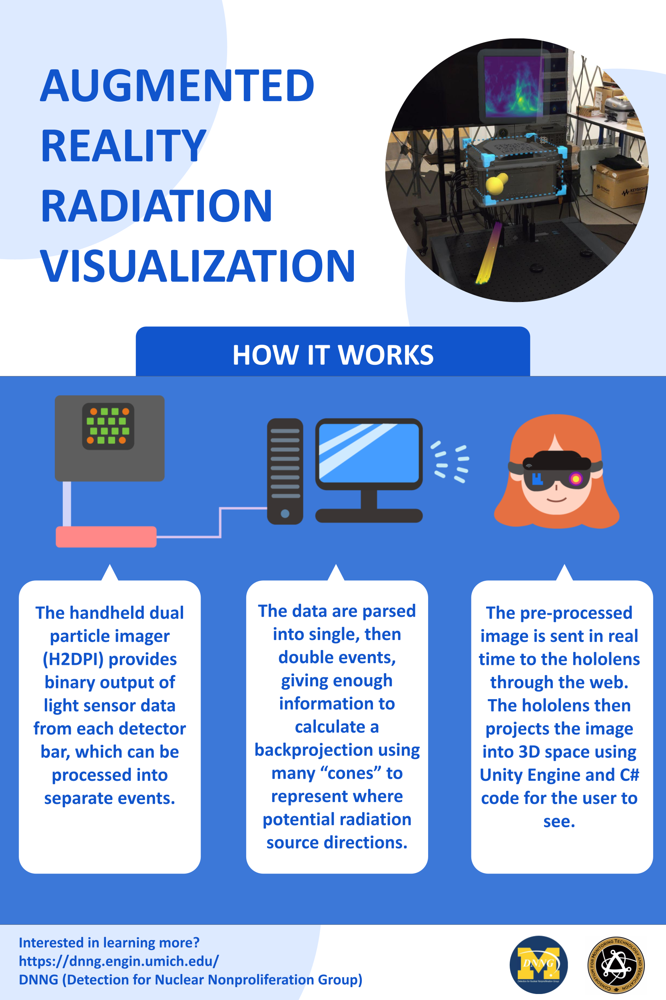
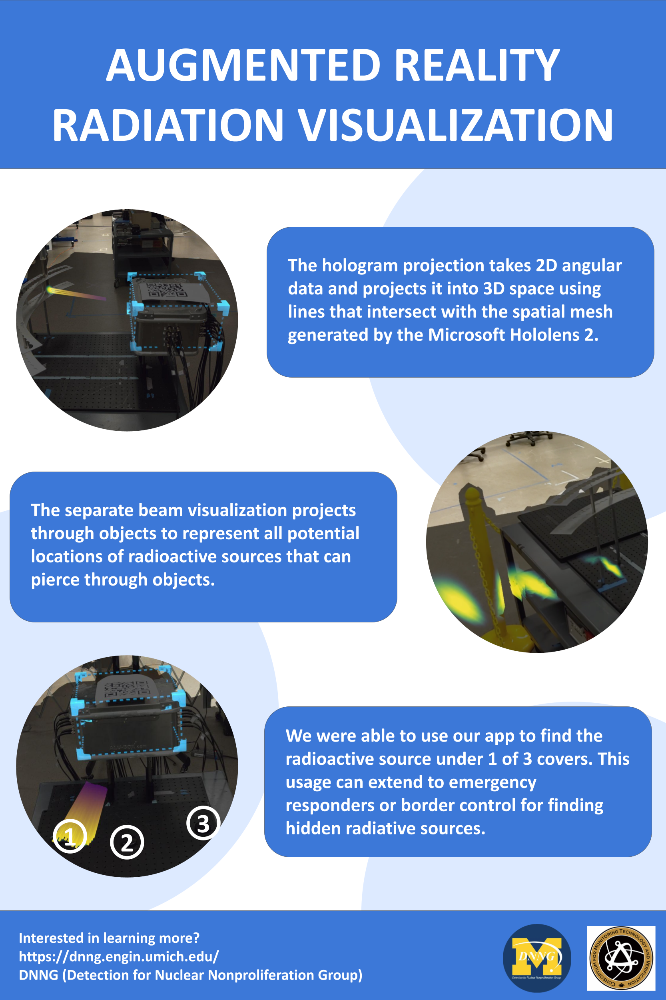

MR Real-Time Radiation Data Visualization
This data visualization tool was created in Unity using Microsoft's MRTK.
The purpose of creating such a tool is to transform data - such as double scatters of neutrons/gamma radiation - from the H2DPI into an easy to access radiation visualization in an MR space through the HoloLens 2, Microsoft’s second AR lens released in 2019. Example use cases include: detecting radiation leakage in a facility, national security and preventing the smuggling of nuclear products.
Official Demo Video
Graphics:
 